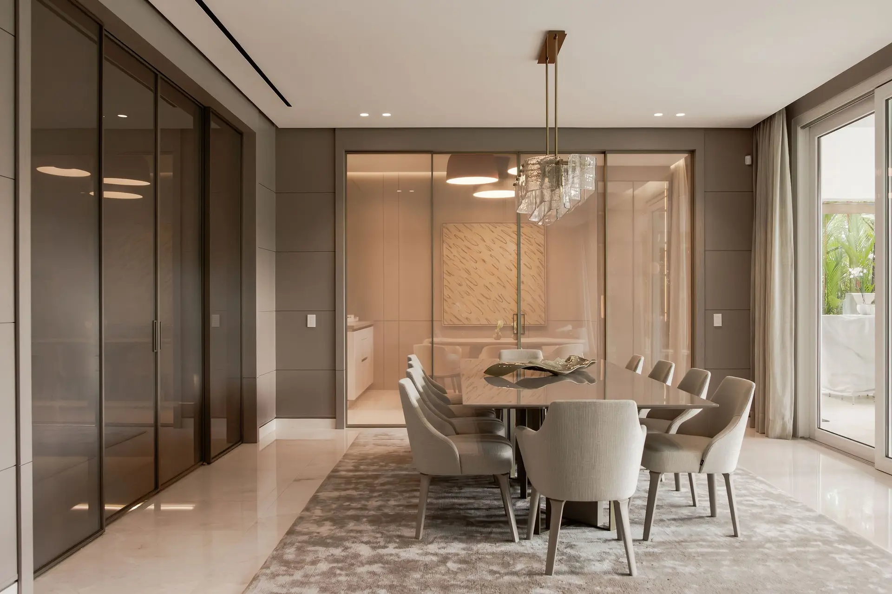
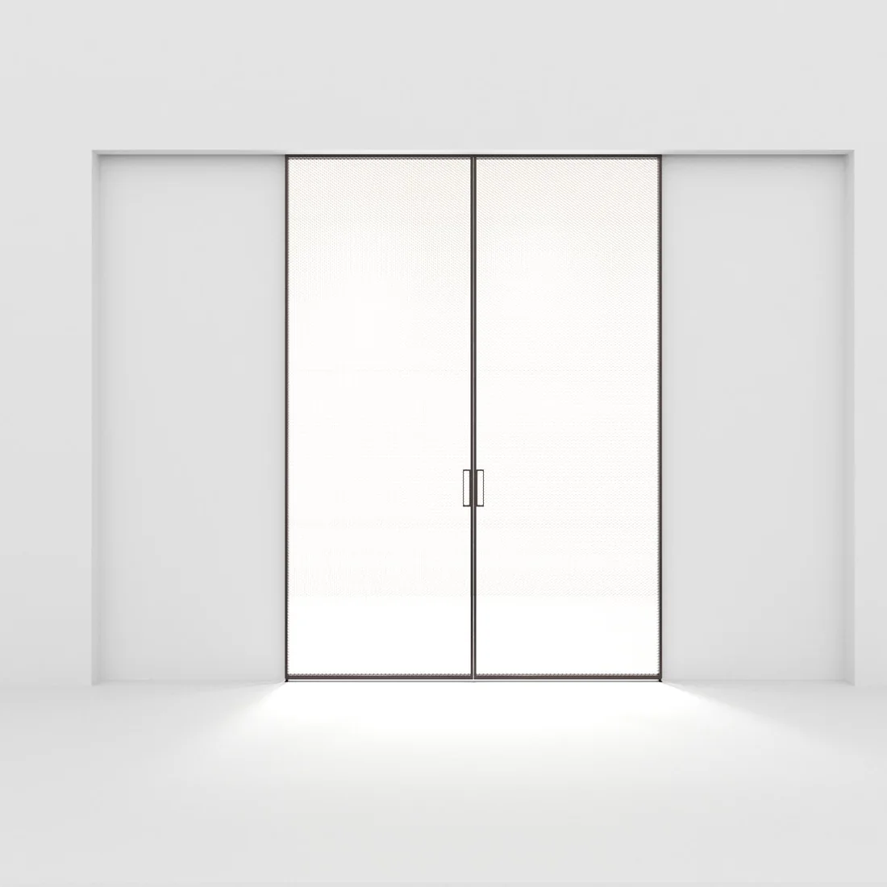
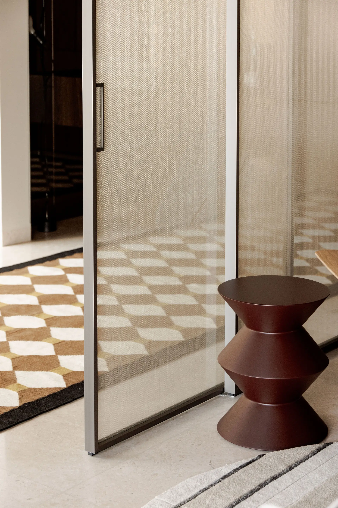
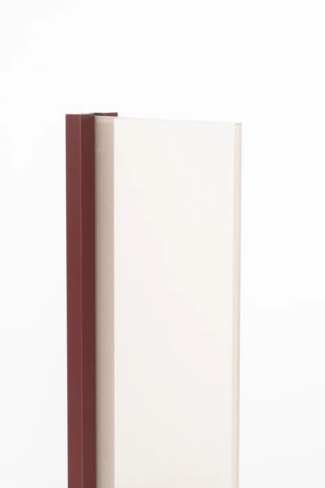

Sistema 2C
Dos hojas corredizas
Pernia Glass — Sistemas de vidrio corredizo
El espacio continúa a través del vidrio.

Puerta corrediza — vidrio laminado
N.º 01
Cada puerta, una pieza única.
Sistemas Pernia — corredizos y pivotantes
Siete formas de abrir un espacio
1A
Fabricación a medida · instalación propia
Una hoja corrediza
→ 2ADos hojas — apertura lateral
→ 2CDos hojas — apertura central
→ 3ATres hojas telescópicas
→ 4ACuatro hojas — luz máxima
→ PIVPuerta pivotante
→ SWIPuerta batiente
→
En imagen — 2C
La transparencia, resuelta.
Sistemas de vidrio corredizo · Panamá


Aluminio anodizado, nueve acabados
Perfilería propia · anodizado a medida

Cada sistema se fabrica en el acabado que el proyecto pide.
Pernia
Sistema corredizo — apertura central
Loop 00:06
A medida
Cada sistema se dimensiona para su vano exacto.
Instalación propia
El mismo equipo fabrica, entrega e instala.
Vidrio laminado
Seguridad y silencio en cada hoja.